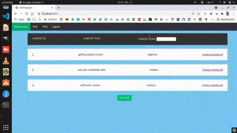

3D projects
-
first glance
MCF game poster house project In my second year in college I was playing a game called "return to raverhearst", this game inspired me to take the idea of moving between places like you hover over a door and then press to enter the room so I took photos of my country house and then made a website that act exactly like the game, we move around in the house by pressing doors or some areas, the project was my first thoughts of VR and benefits of VR and the great experience that VR can give.
also i was introduced to the power of canvas element in html which i will use later in my future projects working with it here was very handy, i made a small script helped me extract points in photos rather than hard code it, the better solution was using some program to extract the border points of some objects in the photo but this was out of my scope back then
-
Going Forward

OpenGL joke later in my fourth year in college I took a course named "draw with computers" which was a very important course to introduce 3D rendering and new technologies that implements the basic concepts of 3D rendering.
for those who don't know what openGL is, openGL is a c++ 3D library that helps alot in making 3D scenes and games.. it is dedicated to desktop not for the web but we may use the shaders of openGL (GLSL) in some application of Web 3D.
-
Moving to the Web
semester project In the second half of the same year we have a semester project, so we decided to try to make an online judge (like codeforces, hackerrank, lightoj, SPOJ..) because we were ACMers (ICPC contesters) so we wanted to know how all of this work but to make work more fantasy or more fun, we decided to make it a 3D game that you walk along some rooms and then solve problems and then if it is right the doors open.
to make this experience more reachable we decided to make it web based not desktop so we needed some technology other than OpenGL, after search we found WebGL and used it to make our work.
-
graduate project Getting Better
after that in fifth year we decided to make a VR for our faculty in Tishreen University so we needed to model all faculty stuff and walls and rooms which was a very hard and tiddy job to be done and if this VR should help fresh students walk in faculty and not get lost, so we needed the modeled faculty to be as similar as possible to the real one, here was the need to some new modern technologies that will make it easier so we used blender to make some complex models, and then we used three.js to make upload this models in web page.